Кино на телевизоре — проще простого
Напишите Чиме название фильма в Telegram или ВКонтакте. Он найдёт, а вы посмотрите на большом экране. Ничего настраивать не нужно.
Что я умею
Всё делается кнопками в Telegram или ВКонтакте — как обычная переписка.
Найду фильм
Напишите название — покажу, что нашлось.
Покажу на телевизоре
Фильм сам появится в приложении ЧимаТВ.
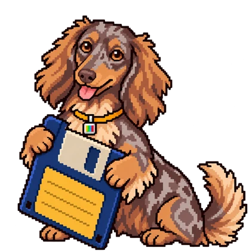
Сохраню в памяти
Смотрите без интернета — хоть на даче.
Найду прямо на ТВ
Кнопка «🔍 Найти» в приложении — телефон не нужен.
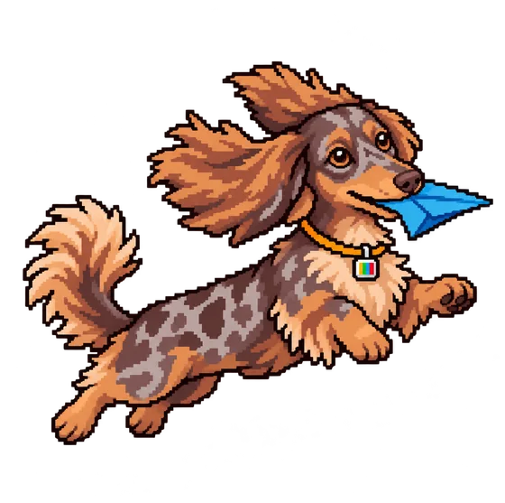
Пришлю в Telegram
Смотрите на телефоне — даже без интернета.
Скачаю видео
С YouTube, VK, Instagram — просто пришлите ссылку.
Как начать — 3 шага
Делается один раз. Дальше — только смотреть.
Напишите мне в Telegram или ВКонтакте
Нажмите кнопку ниже, потом «Старт» (в Telegram) или «Начать» (во ВКонтакте). Я попрошу разрешения у хозяина — обычно это быстро. Когда разрешит, я напишу.
Поставьте приложение на телевизор
Подойдёт телевизор или приставка с Android TV (Sony, Philips, TCL, Xiaomi Mi Box и другие).
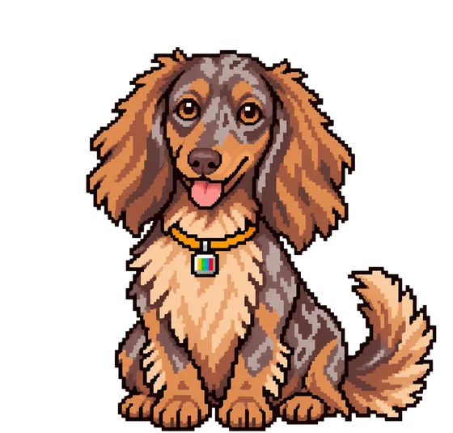
Соедините телевизор со мной
Запустите ЧимаТВ на телевизоре и откройте ⚙ Настройки. Там два QR-кода — Telegram и ВКонтакте. Наведите камеру телефона на тот, где вы пишете Чиме, и нажмите «Старт» или «Начать» — телевизор привяжется к вам сам.
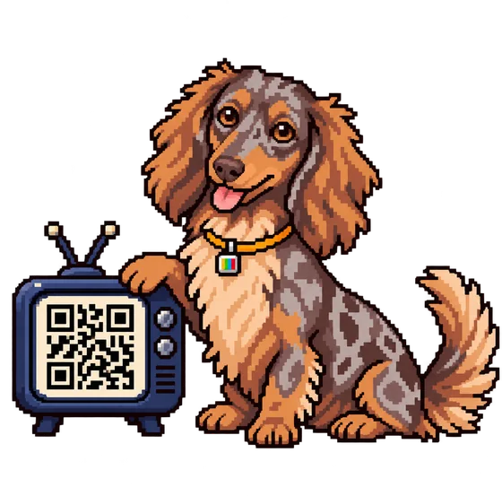
Telegram или ВКонтакте — где удобнее
Чима отвечает и там, и там. Во ВКонтакте — всё нужное для телевизора, в Telegram — ещё и скачивание на телефон.
| Что умеет Чима | Telegram | ВКонтакте |
|---|---|---|
| Найти фильм или сериал | ✓ | ✓ |
| Добавить в медиатеку ТВ | ✓ | ✓ |
| Сохранить в облако | ✓ | ✓ |
| Мои телевизоры | ✓ | ✓ |
| Поддержка | ✓ | ✓ |
| Скачать фильм в Telegram | ✓ | — |
| Видео по ссылке (YouTube, VK, Instagram) | ✓ | — |
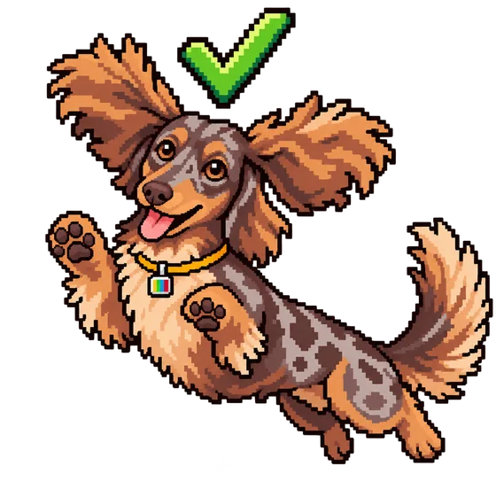
Пишете и там, и там? Свяжите аккаунты
Тогда список фильмов и телевизоры станут общими. Во ВКонтакте нажмите 🔗 Связь с Telegram — Чима пришлёт 6 цифр. Отправьте их Telegram-боту вот так: /vk 123456 (цифры — ваши). Код действует 10 минут.
Как посмотреть фильм
Пока вы идёте к дивану, фильм уже ждёт на телевизоре.
Нажмите 🔍 Поиск в Telegram или ВКонтакте и напишите название. Или кнопку 🔍 Найти прямо на телевизоре.
Выберите фильм из списка. В поиске на телевизоре раздачи с пометкой «✓ под ваш экран» — экономнее: лучше картинка всё равно не станет, а трафика уйдёт меньше.
Нажмите 📺 Добавить в медиатеку ТВ
На телевизоре откройте фильм, выберите, откуда смотреть, и нажмите ▶ Смотреть
Откуда смотреть
Под кнопкой «Смотреть» — варианты. Выберите один, Чима запомнит выбор для этого фильма.
⚡ С торрента
Фильм подгружается из интернета прямо на телевизор. Включается за несколько секунд — подходит почти всегда.
сразу☁ С облака
Сначала фильм подтянет сервер Чимы, потом он пойдёт на телевизор. Выручает, если «С торрента» тормозит или не включается. Если фильм уже в облаке — включается сразу.
+3 минуты · если хозяин включил вам облако💾 Из памяти
Если фильм сохранён в памяти. Работает даже без интернета. Сохранён целиком — Чима сама включит его отсюда, выбирать ничего не нужно.
сразуСохранить фильм
На экране фильма нажмите 💾 Сохранить и выберите куда.
💾 В памяти
Фильм скачается целиком и останется, пока вы его не удалите. Смотрите без интернета — «Из памяти» или во вкладке «Сохранено». Сохранили только часть серий — потом нажмите 💾 Сохранить остальные серии, готовые можно смотреть сразу. Мало памяти? Подключите флешку и в ⚙ Настройках нажмите «Выбрать папку для загрузок».
☁ В облако
Фильм хранится на сервере Чимы и быстро открывается на любом вашем телевизоре. Лежит 3 дня после последнего просмотра, потом удаляется сам. У каждого своё место — обычно 20 ГБ; сколько занято, видно в окне «Сохранить» и в боте.
Сохранить можно и прямо из бота, не подходя к телевизору: кнопка 💾 Сохранить на телевизор у фильма — телевизор скачает его в память сам, даже если ЧимаТВ закрыто (лишь бы телевизор был включён), а Чима напишет, когда всё готово. В облако — кнопкой ☁ Сохранить в облако после добавления фильма; облако включает хозяин.
Что-то не получается?
Не страшно. Вот что обычно помогает.
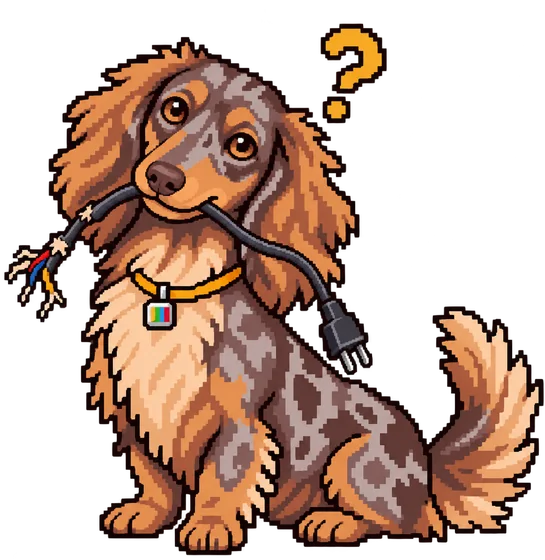
Пишет «нет связи»
Проверьте, что на телевизоре есть интернет. Потом нажмите ⚙ и «Проверить обновления» — я сам всё перепроверю.
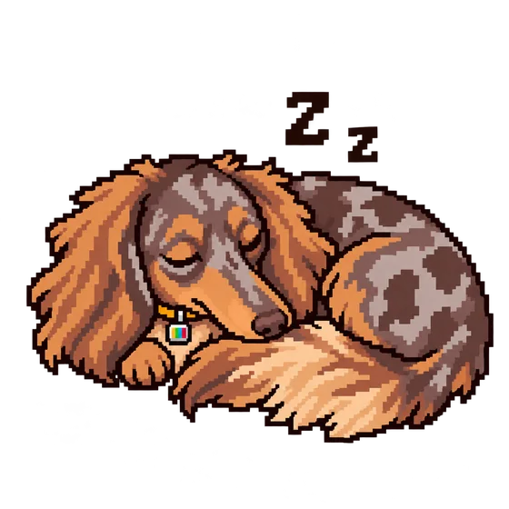
Список пустой
Значит, вы ещё ничего не добавили. Найдите фильм через Telegram, ВКонтакте или кнопкой «🔍 Найти» на телевизоре.
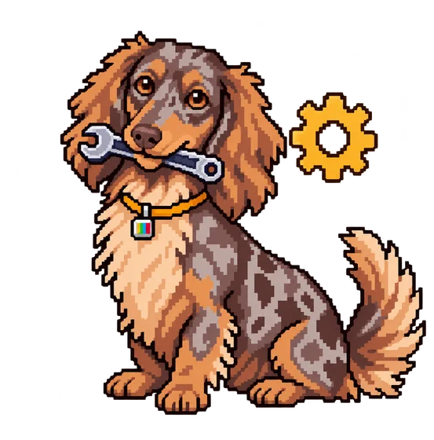
Фильм тормозит или не включается
Вернитесь к фильму и выберите другой вариант в «Откуда смотреть» — чаще всего выручает «☁ С облака». А на дорогу фильм лучше заранее сохранить в памяти.
Мало места на телевизоре
Подключите флешку и откройте ⚙ Настройки: «Выбрать папку для загрузок» — для сохранённых фильмов, «Папка для буфера» — для просмотра без сохранения.
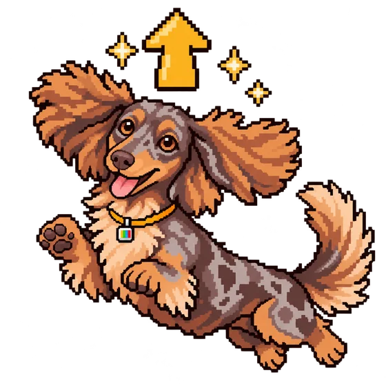
Как обновить приложение?
Ничего делать не нужно: когда выйдет новая версия, телевизор сам предложит обновиться. Просмотренное не потеряется.
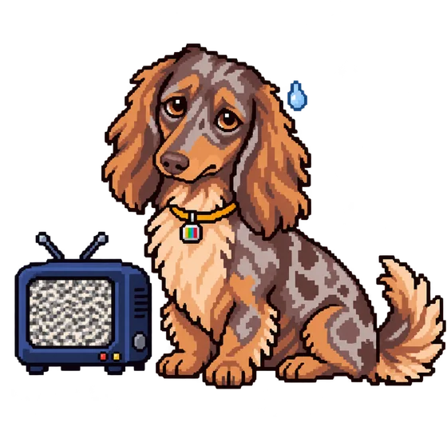
Ничего не помогает
Напишите в поддержку: в боте ❓ Помощь → «✉️ Написать в поддержку». Или прямо с телевизора: ⚙ → «✉️ Написать в поддержку» — Чима сам расскажет, что происходило на экране. Ответ придёт в переписку с Чимой.
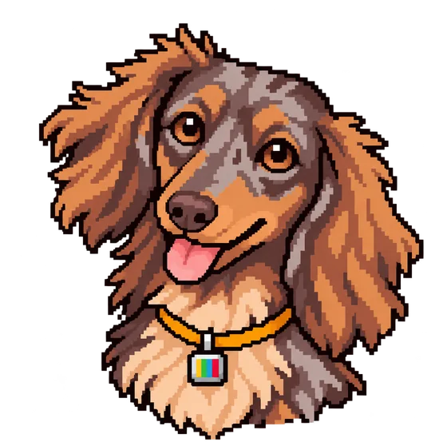